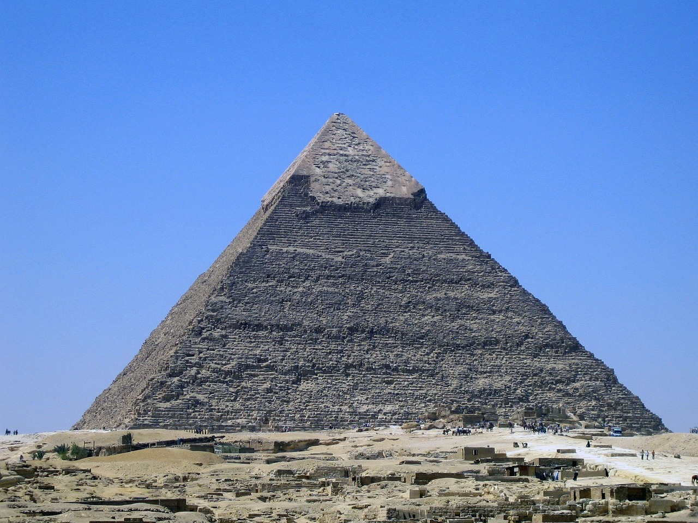

Piramida Cheopsa
Piramida Cheopsa jest największą i najstarszą piramidą w Gizie.
Piramida Cheopsa, znana również jako Wielka Piramida, jest największą i najbardziej imponującą piramidą w Gizie, w Egipcie. Zbudowana w okresie Starego Państwa, prawdopodobnie między 2589 a 2566 rokiem p.n.e., była grobowcem dla faraona Cheopsa, znaczącej postaci w starożytnym Egipcie.
Piramida Cheopsa miała imponujące wymiary: pierwotnie miała wysokość około 146 metrów, a boki jej podstawy miały długość ponad 230 metrów. Była wzniesiona z ogromnych bloków wapienia, które precyzyjnie ułożono w kształt trójkąta. Pierwotnie piramida była pokryta gładką powierzchnią z białego wapienia.
Wewnątrz piramidy znajduje się labirynt korytarzy i komór. Centralnym elementem jest Wielka Galeria, imponująca przestrzeń o długości około 47 metrów, która prowadzi do komory grobowej faraona. Jednak po wielu wiekach wszystkie komory były już splądrowane, a większość skarbów, jakie mogły się w nich znajdować, została wywieziona.
Piramida Cheopsa fascynuje swoją monumentalnością i precyzją konstrukcji. Jest uznawana za jeden z najbardziej imponujących i najważniejszych zabytków starożytnego świata. Jej budowa nadal budzi pytania i jest przedmiotem badań naukowych, które mają na celu zgłębienie tajemnic związanych z technikami budowlanymi używanymi przez starożytnych Egipcjan.